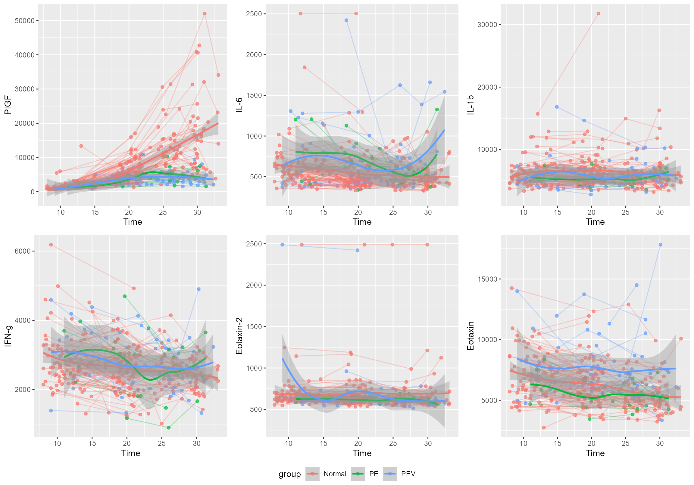
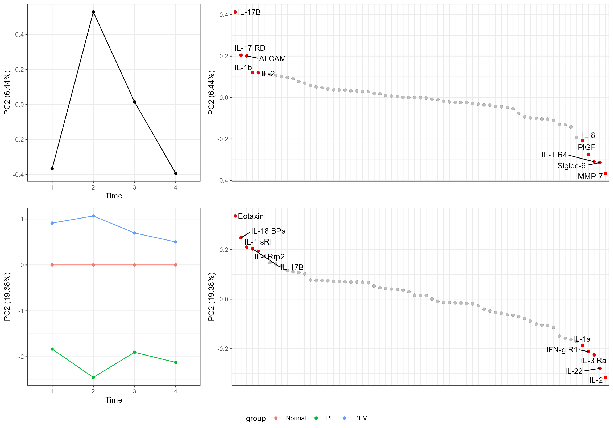
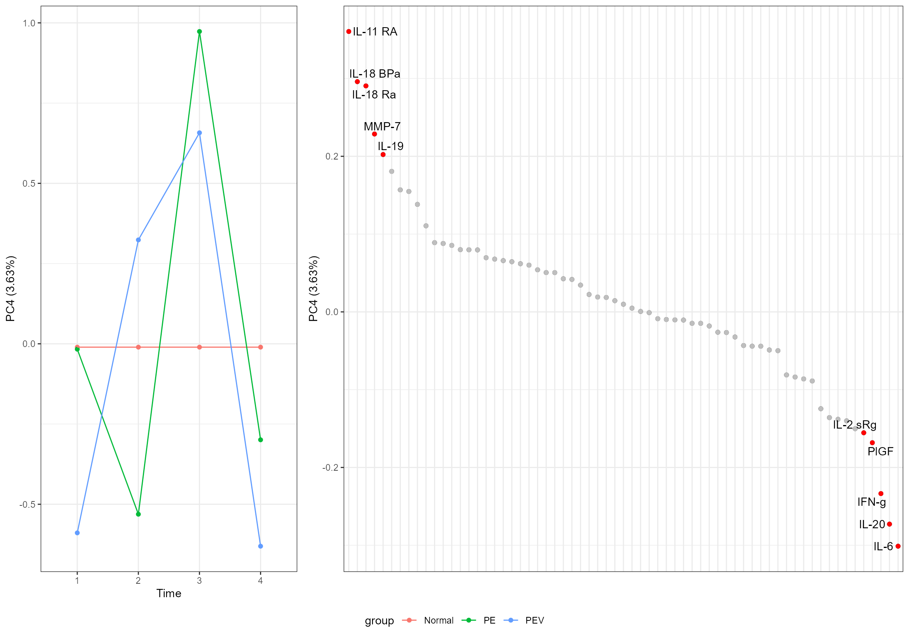
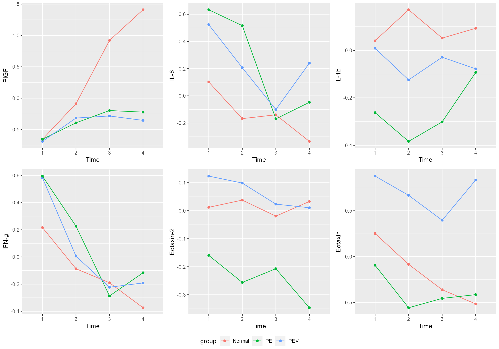
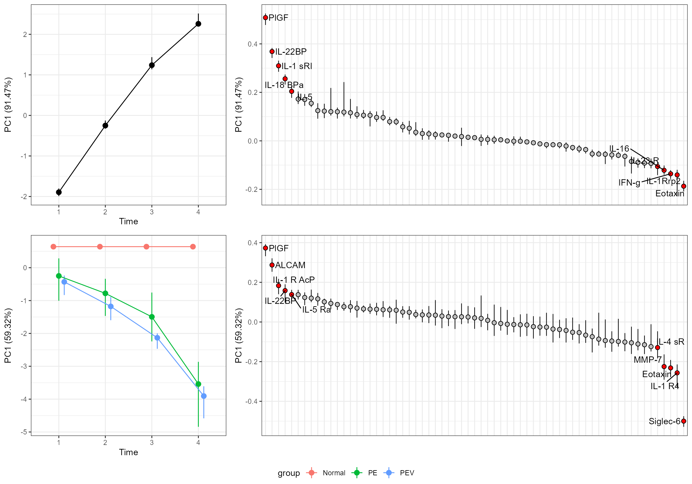
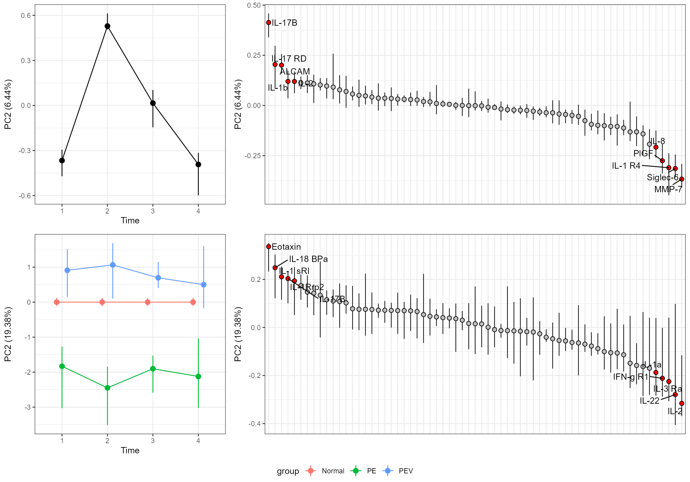

Getting started
This is an example of RMASCA applied on observational data. If you are more interested in interventional data, have a look at the metabolomics vignette. If you want an introduction to RMASCA, have a look at Get Started.
Preparing the data
In this example we will look at data from Tarca et al. (2019). This is mostly a demonstration of the RMASCA package, and not a stringent scientific analysis.
The data looks like this
head(df[,1:20])
#> ID GA GADiagnosis BMI Smoking Age Nulliparity EarlyPE EarlyPE_MVU
#> 1 1 14.9 31.9 22.5 0 28 0 1 1
#> 2 1 18.9 31.9 22.5 0 28 0 1 1
#> 3 1 27.9 31.9 22.5 0 28 0 1 1
#> 4 2 14.6 31.6 47.2 0 31 0 1 1
#> 5 2 21.6 31.6 47.2 0 31 0 1 1
#> 6 2 25.6 31.6 47.2 0 31 0 1 1
#> EarlyPE_Severe SL000318 SL002662 SL003168 SL000403 SL000591 SL000053 SL004332
#> 1 1 901.8 1232.3 1749.2 66411.5 377.3 545.7 202.1
#> 2 1 1156.3 1291.7 1840.0 64864.9 521.3 502.0 217.9
#> 3 1 1838.2 948.7 1812.8 83566.8 376.8 430.1 198.9
#> 4 1 3357.4 2930.8 1861.7 61027.7 385.7 490.8 222.6
#> 5 1 797.0 2054.9 2001.7 55158.4 324.0 604.8 204.6
#> 6 1 5399.6 1971.8 1861.5 60165.8 426.8 575.7 189.6
#> SL000592 SL000584 SL003322
#> 1 554.9 3109.4 4950.9
#> 2 730.2 2755.9 5565.2
#> 3 699.6 2881.9 5400.6
#> 4 535.6 2501.2 5124.3
#> 5 535.2 2227.7 6290.5
#> 6 680.5 2568.8 3966.3So the columns from 11 and beyond are protein levels. We convert it to long format,
RMASCA expects a data frame with at least the following columns (with these exact names)
-
timeEither factor, string or integer. Defines when a sample is taken. -
variableEither a factor or a string. The measured variable. -
groupEither a factor, string or integer. Defines the group of a participant
The variable column is already okay. Let us define the time points;
plot(df$GA[df$variable == "SL000318"])
All patients got their diagnosis before week 33.4, so let us limit ourselves to samples from before that and bulk the samples into
- Time 1: Before week 15
- Time 2: Week 15-22.5
- Time 3: Week 22.5-27.5
- Time 4: Week 27.5-33.4
As for grouping, I decided to use
- Normal pregnancies (Normal)
- Early preeclampsia with maternal vascular malperfusion (PEV)
- Early preeclampsia withou maternal vascular malperfusion (PE)
In the paper, they identified the following important proteins (I’d to look up the somaIDs myself, so errors may have occurred)
- Matrix metalloproteinase-7 (also known as Matrilysin): SL000525
- Glycoprotein IIbIIIa complex (couldn’t find ID)
- Placental growth factor (PlGF): SL002640
- Vascular endothelial growth factor A, isoform 121 (VEGF-121) (couldn’t find ID)
- Sialic acid binding immunoglobulin-like lectin 6 (siglec-6): SL005217
- Activin-A (couldn’t find ID)
- Leukocyte cell adhesion molecule (ALCAM): SL003166
In addition, I am interested in inflammatory proteins, so let us add interleukins and interferons, and eotaxin.
df <- merge(df, somaids, by.x = "variable", by.y = "SomaId") # add protein names
selectedVariables <- c(which(df$variable %in% c("SL000525", "SL002640", "SL005217", "SL003166", "SL003104","SL000406")),
which(substr(df$Target,1,3) == "IL-"),
which(substr(df$Target,1,4) == "IFN-"))
df <- df[selectedVariables,]
df$variable <- factor(df$Target)We can have a quick look at the data,
do.call(
ggpubr::ggarrange,
c(plotParts(df, participantColumn = "ID", timeColumn = "GA", valueColumn = "value", addSmooth = "loess", variable = c("PlGF", "IL-6", "IL-1b", "IFN-g", "Eotaxin-2", "Eotaxin")),
common.legend = TRUE, legend = "bottom")
)
#> `geom_smooth()` using formula 'y ~ x'
#> `geom_smooth()` using formula 'y ~ x'
#> `geom_smooth()` using formula 'y ~ x'
#> `geom_smooth()` using formula 'y ~ x'
#> `geom_smooth()` using formula 'y ~ x'
#> `geom_smooth()` using formula 'y ~ x'
#> `geom_smooth()` using formula 'y ~ x'
Running ALASCA
We are now ready to try ALASCA(),
PE.mod <- ALASCA(df, model.formula)
#> Will use linear mixed models!
#> Using group for stratification.
#> Scaling data...
#> Calculating LMM coefficients...
#> Registered S3 methods overwritten by 'lme4':
#> method from
#> cooks.distance.influence.merMod car
#> influence.merMod car
#> dfbeta.influence.merMod car
#> dfbetas.influence.merMod car
#> Finished calculating regression coefficients!
#> Calculating predictions from regression models...
#> Finished calculating predictions from regression models!
#> Calculating effect matrix
#> Finished calculating effect matrix!With a screeplot we can say something about how many components we need,
screeplot(PE.mod)
It seems like three components should be enough.
plot(PE.mod)
It’s a bit crowded on the x-axis of the loadings, so we will only name the five with highest/lowest loading,
plot(PE.mod, tooDense = 5)
plot(PE.mod, component = 2, tooDense = 5)
plot(PE.mod, component = 3, tooDense = 5)
plot(PE.mod, component = 4, effect = "group", tooDense = 5) # just to demonstrate how to extract only the group effect plot
We can also look up specific variables,

and also have a look at the underlying model predictions
do.call(
ggpubr::ggarrange,
c(plotPred(PE.mod, variable = c("PlGF", "IL-6", "IL-1b", "IFN-g", "Eotaxin-2", "Eotaxin")),
common.legend = TRUE, legend = "bottom")
)
To see the most important loading variables for the time component, we can use getLoadings(),
top_loadings <- subset(getLoadings(PE.mod)$time, PC == 1)
top_loadings <- top_loadings[order(top_loadings$loading, decreasing = TRUE),]
knitr::kable(top_loadings[1:5,])| covars | PC | loading | |
|---|---|---|---|
| 64 | PlGF | 1 | 0.5083257 |
| 47 | IL-22BP | 1 | 0.3684809 |
| 12 | IL-1 sRI | 1 | 0.3096282 |
| 33 | IL-18 BPa | 1 | 0.2559541 |
| 56 | IL-5 | 1 | 0.2041814 |
Let us add some uncertainty estimates to our model. This may take some time, but it is extra slow when compiling this documentation; usually this model needs about 5 seconds per run. Since we have quite many measured variables, we will set validateRegression = FALSE to save some time.
PE.mod <- validate(PE.mod, participantColumn = "ID", validateRegression = FALSE)
#> Running validation...
#> - Run 1 of 50
#> --- Used 1 seconds. Est. time remaining: 49.06 seconds
#> - Run 2 of 50
#> --- Used 50.77 seconds. Est. time remaining: 1242.48 seconds
#> - Run 3 of 50
#> --- Used 49.95 seconds. Est. time remaining: 1593.68 seconds
#> - Run 4 of 50
#> --- Used 51.49 seconds. Est. time remaining: 1761.97 seconds
#> - Run 5 of 50
#> --- Used 51.88 seconds. Est. time remaining: 1845.81 seconds
#> - Run 6 of 50
#> --- Used 53.78 seconds. Est. time remaining: 1898.37 seconds
#> - Run 7 of 50
#> --- Used 52.38 seconds. Est. time remaining: 1911.96 seconds
#> - Run 8 of 50
#> --- Used 53.03 seconds. Est. time remaining: 1912.48 seconds
#> - Run 9 of 50
#> --- Used 54.63 seconds. Est. time remaining: 1908.36 seconds
#> - Run 10 of 50
#> --- Used 58.16 seconds. Est. time remaining: 1908.27 seconds
#> - Run 11 of 50
#> --- Used 1.01 seconds. Est. time remaining: 1695.02 seconds
#> - Run 12 of 50
#> --- Used 43.23 seconds. Est. time remaining: 1650.81 seconds
#> - Run 13 of 50
#> --- Used 48.21 seconds. Est. time remaining: 1620.93 seconds
#> - Run 14 of 50
#> --- Used 43.91 seconds. Est. time remaining: 1577.38 seconds
#> - Run 15 of 50
#> --- Used 43.18 seconds. Est. time remaining: 1532.09 seconds
#> - Run 16 of 50
#> --- Used 44.22 seconds. Est. time remaining: 1489.26 seconds
#> - Run 17 of 50
#> --- Used 45.39 seconds. Est. time remaining: 1448.55 seconds
#> - Run 18 of 50
#> --- Used 44.36 seconds. Est. time remaining: 1405.48 seconds
#> - Run 19 of 50
#> --- Used 43.86 seconds. Est. time remaining: 1361.47 seconds
#> - Run 20 of 50
#> --- Used 44.53 seconds. Est. time remaining: 1318.46 seconds
#> - Run 21 of 50
#> --- Used 45.43 seconds. Est. time remaining: 1276.56 seconds
#> - Run 22 of 50
#> --- Used 46.88 seconds. Est. time remaining: 1236.18 seconds
#> - Run 23 of 50
#> --- Used 53.33 seconds. Est. time remaining: 1202.8 seconds
#> - Run 24 of 50
#> --- Used 44.95 seconds. Est. time remaining: 1158.7 seconds
#> - Run 25 of 50
#> --- Used 48.49 seconds. Est. time remaining: 1118.05 seconds
#> - Run 26 of 50
#> --- Used 51.28 seconds. Est. time remaining: 1079.38 seconds
#> - Run 27 of 50
#> --- Used 52.94 seconds. Est. time remaining: 1041.2 seconds
#> - Run 28 of 50
#> --- Used 55.59 seconds. Est. time remaining: 1004.04 seconds
#> - Run 29 of 50
#> --- Used 48.34 seconds. Est. time remaining: 960.36 seconds
#> - Run 30 of 50
#> --- Used 45.72 seconds. Est. time remaining: 914.62 seconds
#> - Run 31 of 50
#> --- Used 36.84 seconds. Est. time remaining: 863.44 seconds
#> - Run 32 of 50
#> --- Used 37.32 seconds. Est. time remaining: 813.43 seconds
#> - Run 33 of 50
#> --- Used 37.29 seconds. Est. time remaining: 764.17 seconds
#> - Run 34 of 50
#> --- Used 37.23 seconds. Est. time remaining: 715.58 seconds
#> - Run 35 of 50
#> --- Used 39.66 seconds. Est. time remaining: 668.69 seconds
#> - Run 36 of 50
#> --- Used 42.88 seconds. Est. time remaining: 623.45 seconds
#> - Run 37 of 50
#> --- Used 40.03 seconds. Est. time remaining: 577.33 seconds
#> - Run 38 of 50
#> --- Used 40.9 seconds. Est. time remaining: 531.82 seconds
#> - Run 39 of 50
#> --- Used 38.94 seconds. Est. time remaining: 485.98 seconds
#> - Run 40 of 50
#> --- Used 38.5 seconds. Est. time remaining: 440.38 seconds
#> - Run 41 of 50
#> --- Used 38.99 seconds. Est. time remaining: 395.23 seconds
#> - Run 42 of 50
#> --- Used 39.05 seconds. Est. time remaining: 350.39 seconds
#> - Run 43 of 50
#> --- Used 43.45 seconds. Est. time remaining: 306.54 seconds
#> - Run 44 of 50
#> --- Used 44.59 seconds. Est. time remaining: 262.85 seconds
#> - Run 45 of 50
#> --- Used 43.71 seconds. Est. time remaining: 219.03 seconds
#> - Run 46 of 50
#> --- Used 45.57 seconds. Est. time remaining: 175.38 seconds
#> - Run 47 of 50
#> --- Used 44.6 seconds. Est. time remaining: 131.58 seconds
#> - Run 48 of 50
#> --- Used 43.62 seconds. Est. time remaining: 87.71 seconds
#> - Run 49 of 50
#> --- Used 42.4 seconds. Est. time remaining: 43.83 seconds
#> - Run 50 of 50
#> --- Used 43.48 seconds. Est. time remaining: 0 seconds
#> - Calculates percentiles for score and loading...
plot(PE.mod, tooDense = 5)
plot(PE.mod, component = 2, tooDense = 5)